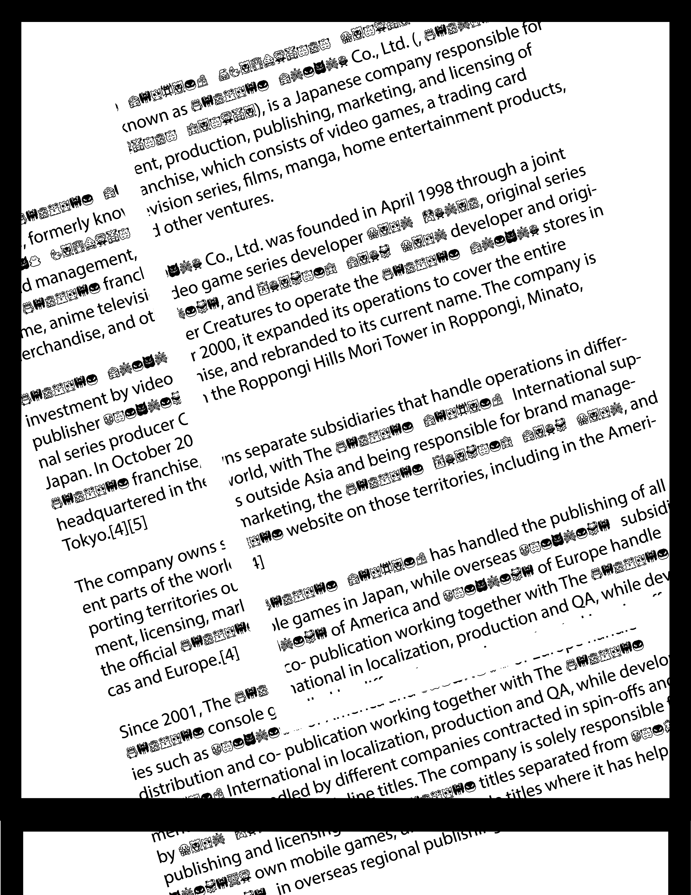
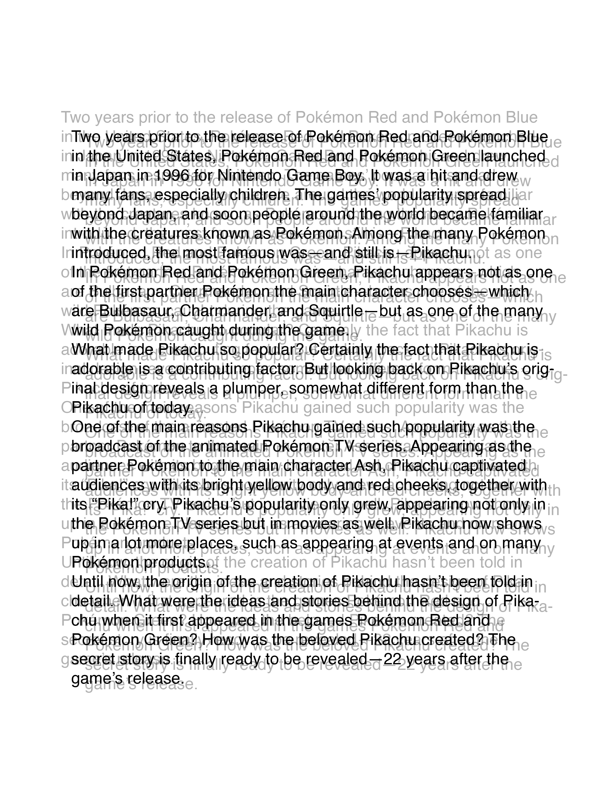
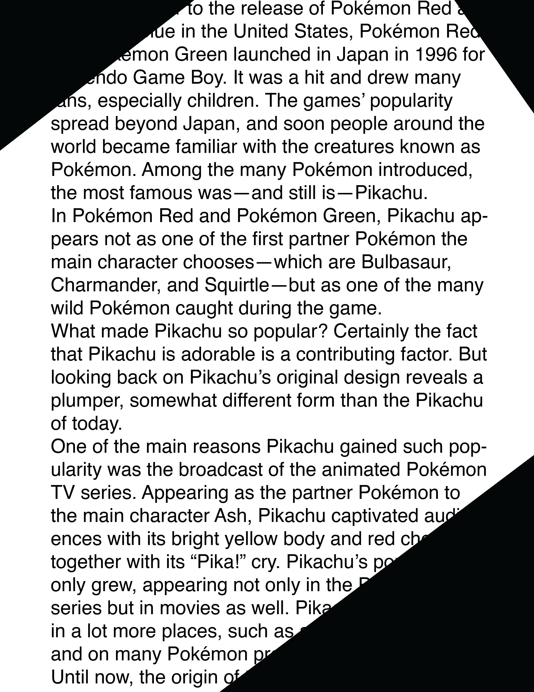
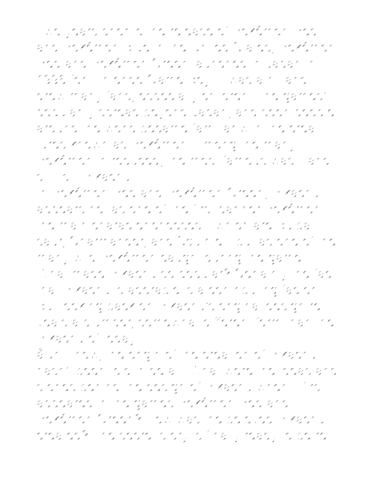
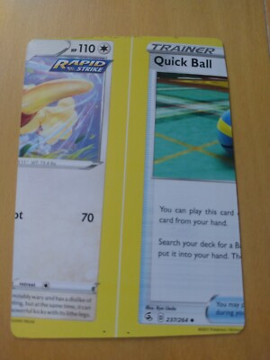
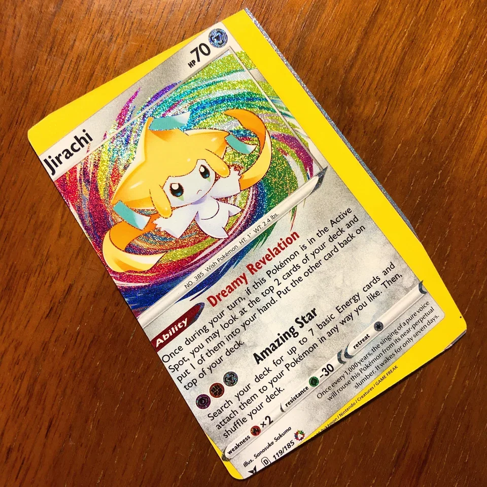
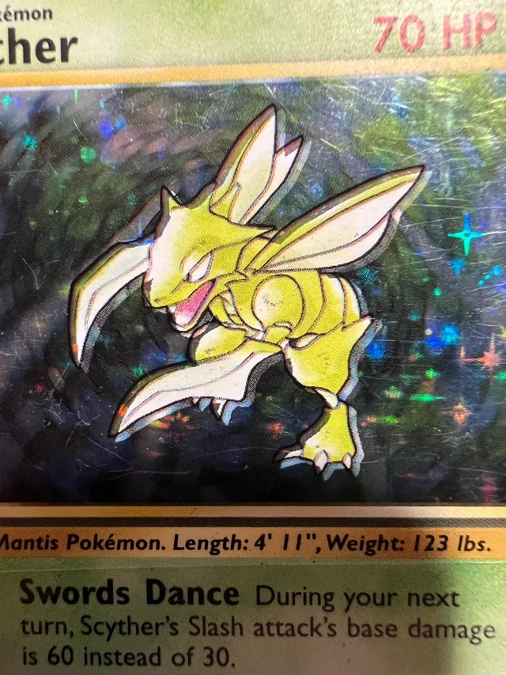
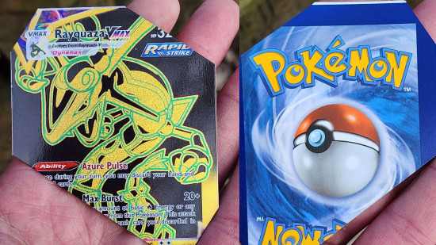
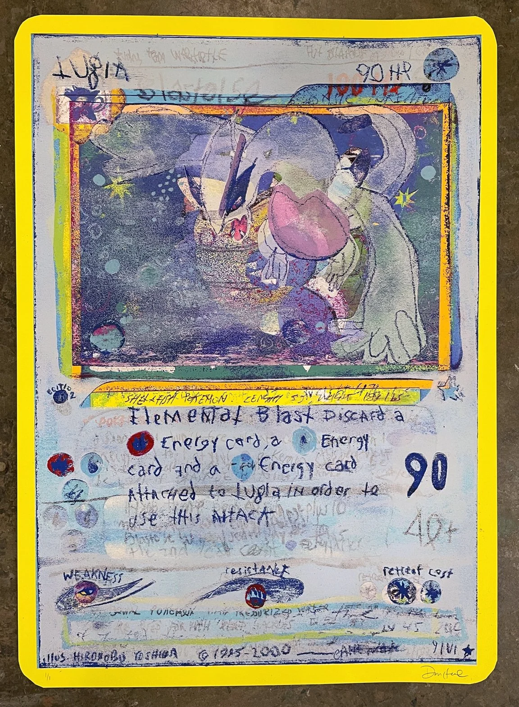

After reading about these techniques, it reminded me of one of my first experiences with glitches from my childhood, Pokémon card misprints. Some of these glitch techniques relate really closely to common misprint errors. The five techniques I chose are line skips, line loops, transposing, missing words, and column confusion. I found it really interesting how these reading “mistakes” can also happen physically through the printing process. For example, line loops remind me of double printing, where an image or text accidentally appears twice, while transposing is similar to registration errors, where different printing layers are shifted out of place. Missing words can relate to missing ink, and column confusion reminds me of miscut cards where parts of two different cards appear together. I want to use these connections to look at misprints not just as mistakes, but as glitches that can change how we read and see a Pokémon card.




